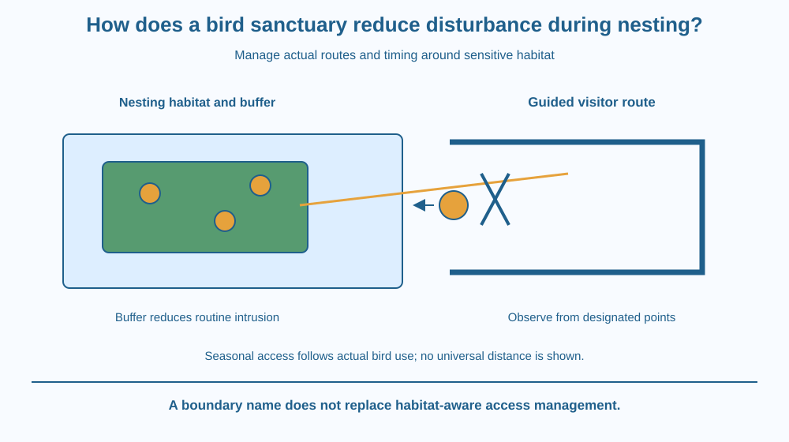

Explain how managing human access can reduce disturbance near nesting birds. Distinguish a sanctuary's boundary from its practical zoning, timing and observation rules. Connect repeated disturbance with interrupted nesting behaviour without assigning one universal response or safe distance to every species.
A wetland may contain suitable water and vegetation, yet nesting birds can still be disturbed by repeated close approaches. A sign naming the place a sanctuary does not itself keep people, boats or noise away from sensitive areas.
What must management actually change? It can control where and when activity occurs, guide movement along routes and protect particular nesting sites during vulnerable periods.
The useful question is how the arrangement of access affects the birds' behaviour. This differs from merely listing endangered species or repeating the consequences of losing a food-web member.
A nesting site is a location used for eggs and young. Different birds choose different sites, including ground, vegetation, cavities and built structures. Their vulnerability to disturbance depends partly on that location and on their behaviour.
When an adult repeatedly leaves or interrupts nest attendance, eggs or young can lose needed protection or care. Exposure, predation risk and reduced feeding can become relevant, depending on the species and stage. One brief movement does not prove that a nest will fail, so observations need context.
Disturbance can include close physical approach, repeated movement, noise or interference with the habitat. Its effect depends on intensity, frequency, predictability and the bird's tolerance. There is no single distance that is safe for all birds under all conditions.
Zoning separates areas with different allowed activities. A protected nesting area can be buffered from a public route, while observation occurs from designated places farther away. The arrangement must account for actual bird use rather than drawing an attractive map unrelated to habitat.
Seasonal access control recognises that a site may be especially sensitive during nesting. A path suitable at one time may need restrictions at another. Timing is a management variable, not an assumption that every species nests in the same month.
A buffer can reduce direct intrusion, but it is not a magical wall. Noise, wandering pets, boats or repeated approaches can still cross an ineffective arrangement. Clear routes, appropriate supervision and compliance matter alongside the mapped boundary.
Monitoring can check whether management is working. Suitable observations might record use of nesting areas and disturbance events from approved positions. Monitoring itself must not become repeated close nest inspection that creates the very disturbance it aims to measure.
A sanctuary also needs habitat and wider management beyond visitor rules. Water conditions, vegetation and surrounding land use can affect nesting. This lesson isolates disturbance reduction as one practical mechanism, without claiming that access control solves every conservation problem.
Draw a nesting patch, a visitor route and an observation point. First let the route pass directly through the patch. Then move it to the side and add a buffer between routine activity and the nesting area.
Trace the likely movement of people, not just the line of the boundary. If the route encourages shortcuts through the protected patch, the map is not functioning as intended. Design must consider actual behaviour.
Add a seasonal layer that changes access during nesting. The habitat stays in place, but management responds to when it is used. This connects space and time rather than treating a sanctuary as one permanently uniform zone.
The SVG shows a nesting area separated from a visitor path by a buffer. A designated observation point faces the habitat without a route entering the nest patch.
A second inset contrasts an intrusive shortcut with the intended path. A seasonal symbol indicates that access rules can change with bird use. No universal distance or date is printed on the diagram.
The illustration is a management concept, not a legal map of a real sanctuary. Its bird and nest symbols are examples rather than identification guides or instructions to locate and approach active nests.

Bird sanctuaries and wetland reserves in India can use paths, viewing structures and temporary restrictions to guide visitors. Their effectiveness depends on local habitat and enforcement as well as visitor cooperation.
A school nature visit should follow the site's current instructions. Quiet behaviour, staying on approved routes and keeping a respectful distance support the management system. Students should not infer permission to approach simply because a bird has not visibly flown away.
Photography can create pressure to move closer. A better educational record may be a distant observation with an honest identification limit rather than a close image obtained by repeatedly disturbing the animal.
Use paper and coloured pencils. No wildlife visit or nest search is needed.
Explain how each feature changes an actual disturbance route. Decorative borders alone are insufficient. The map is an invented design exercise and cannot establish a safe distance, permitted activity or nesting season for a real protected site.
A route is far from nests but passes a quiet resting area repeatedly used by adults. Could it still affect nesting behaviour indirectly? Explain why management needs observations of the whole habitat use pattern.
Now imagine a monitoring team approaching each nest closely every day. Why might their measurement procedure undermine the protection goal? A successful evaluation must account for its own effect on the system.
What is zoning in this management example?
Answer: B — Zoning arranges activities spatially according to habitat and protection needs.
Why may repeated close approaches matter to a nest?
Answer: C — Disturbance can change attendance and expose eggs or young, depending on conditions.
Monitoring requires close daily nest visits that disturb adults. What should be reconsidered?
Answer: A — An evaluation should not repeatedly create the problem it is supposed to measure.
Design a visitor map with three layers: habitat, routine access and seasonal restrictions. Explain how a buffer and observation point reduce a specified disturbance pathway.
Include an inspection question that can be answered from an approved viewing position. Your design must not send children searching for nests or assign a made-up safe distance to every bird. State that real visits follow the site's current guidance and staff instructions.
A conservation measure can be about keeping a useful activity in the right place and time rather than removing people from an entire landscape. Carefully arranged access can support learning while reducing repeated intrusion. The details matter because a boundary line alone does not control how visitors actually move.
Nesting protection uses habitat-aware routes, buffers and timing to reduce disturbance; a sanctuary name alone does not determine what birds experience.